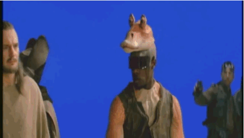

Computer-generated imagery powstało pod koniec lat 90' i otworzyło szereg nowych możliwośći w kinematografii.
Dzięki CGI można było stworzyć postacie w programach do grafiki 3D, a następnie "wsadzić" je do filmu. Technologia ta na początku miała jednak wiele wad. Postacie wyglądały nierealistycznie i nie za bardzo pasowały do otoczenia. Przykładem jest Jar Jar Binks który występował w wszystkich częściach prequelów (trylogia filmów przed oryginalną trylogią)
Komputery w końcu stały się na tyle wydajne, że niebieski ekran można było usuwać komputerowo. Dzięki temu powstały sceny, gdzie cały świat był stworzony komputerowo.